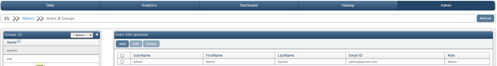
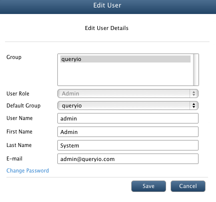
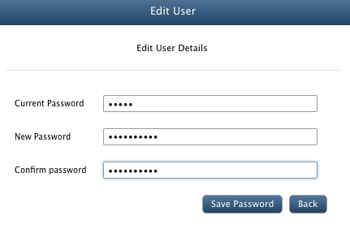

Users & Groups
In this chapter
It displays all the details of the registered groups and users. QueryIO provides you to edit details of registered user, delete users, manage users in different groups or add new users and groups.
Details displayed includes:
- Group: Group in which user belongs to.
- User Name: Login ID for the user.
- First Name: First name of the user.
- Last Name: Last name of the user.
- E-Mail: Email address of the user.
- Phone No.: Phone number of the user.
- Role: Admin or User

Add new User
To add new user to QueryIO, click on Add button.
- Group: Select the group of the user from the list. A user can belong to more than one group. To create a new group, click Add Group.
- User Role: Select the user role from Admin or User.
- Default Group: Select default group for the user from the above selected groups. User is identified by this group for all operations.
- User Name: Login ID for the user.
- First Name of user.
- Last Name of user.
- Password for login.
- E-mail address of the user.
- Fill the details and click Save to add new user.
NOTE: QueryIO Group is the super group. Users belonging to this group have access to all files.
Add new Group
To add new user group to QueryIO, click on Add action on Groups section.
- Group Name: Enter name of the Group.
- Click Save to add new group.
Edit User Details
To edit the details of a registered user, select the check box against user and click on Edit.
- Enter new details.
- Click Change Password to update the password.
- Enter old password and new password. Click Save Password to update password for the user.
- Click Save button to store the modified details.


NOTE: You can not edit other users information or you must be Admin user to perform this operation.
Delete User
To delete a user, select the check box against target user and click on Delete button.
More than one user can be deleted at a time.
Copyright © 2017 QueryIO Corporation. All Rights Reserved.
QueryIO, "Big Data Intelligence" and the QueryIO Logo are trademarks
of QueryIO Corporation. Apache, Hadoop and HDFS are trademarks of The Apache Software Foundation.